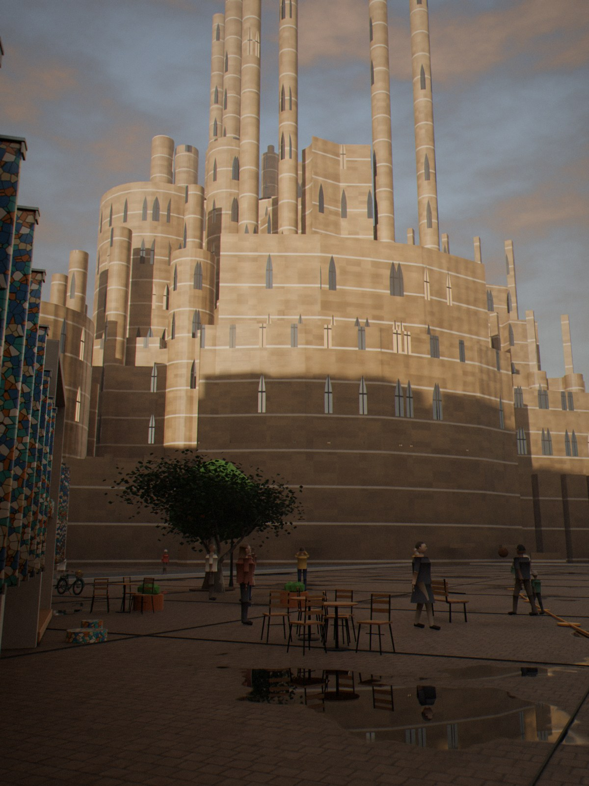
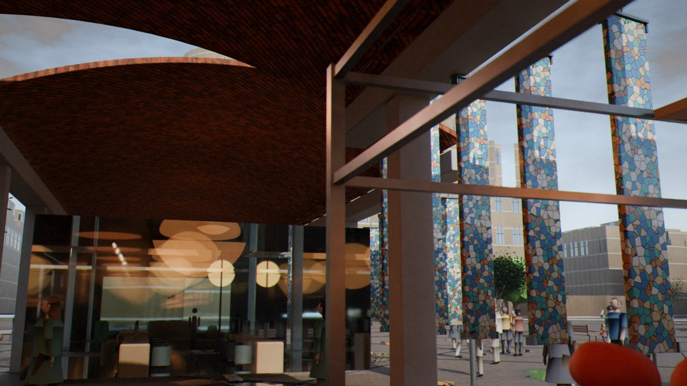
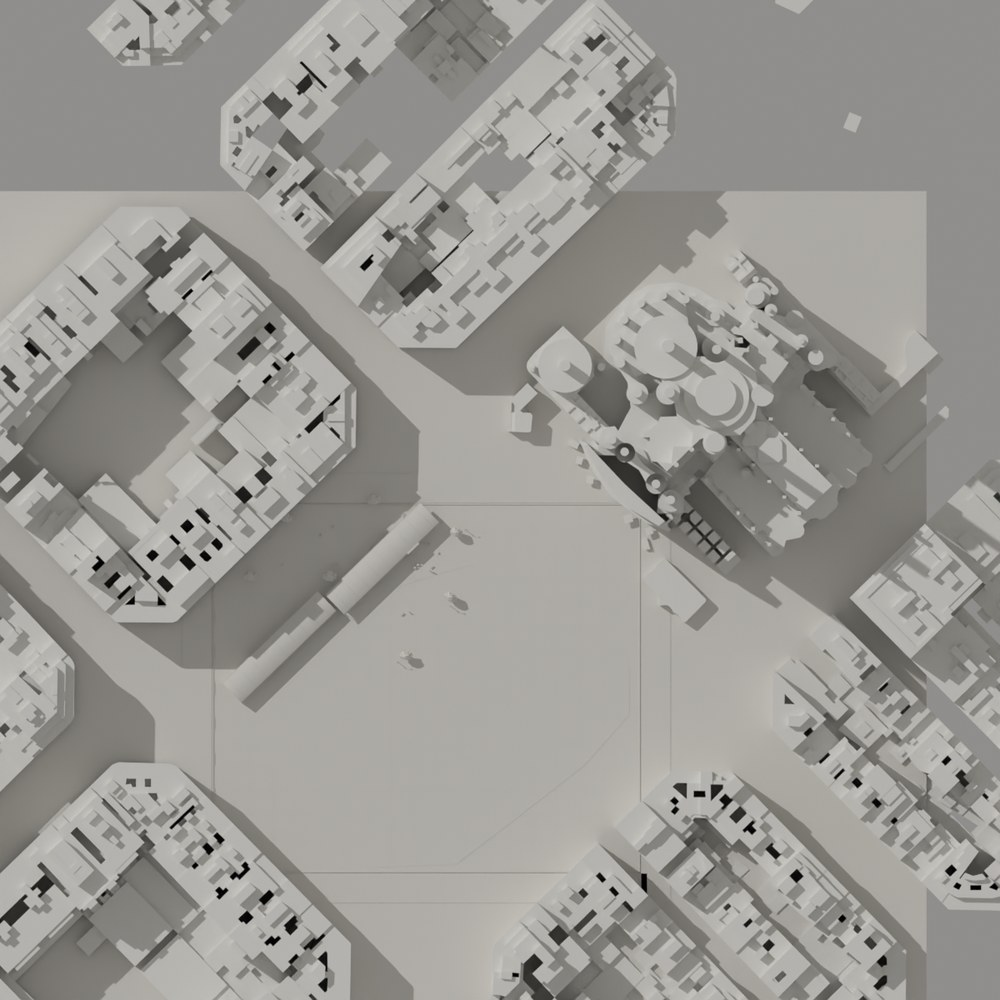
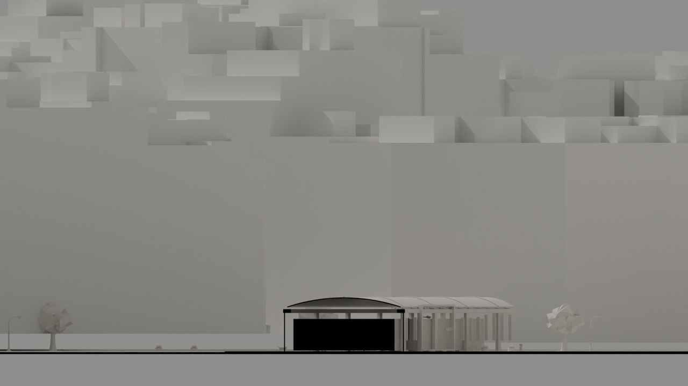
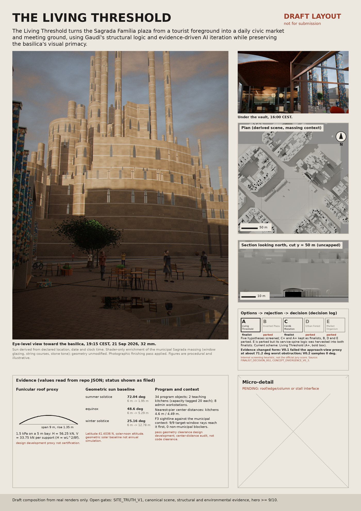

The Living Threshold
The Living Threshold turns the Sagrada Família plaza from a tourist foreground into a daily civic market and meeting ground, using Gaudí's structural logic and evidence-driven AI iteration while preserving the basilica's visual primacy.


Plan and section


Board draft

Disclosures
- The Sagrada Família massing is the municipal model; windows, string courses and stone tone are a shader-only visual enrichment, and the geometry is unmodified.
- A photographic finishing pass is applied (bloom, vignette, grain, tone curve).
- Figures are procedural and illustrative; no real or AI-generated people.
- Trencadís fins are a stylistic choice.
Attribution
- Barcelona topographic base map and the 3D building model of the Sagrada Família: Ajuntament de Barcelona / Open Data BCN, licence CC BY 4.0.
- Plaza and basilica outline: © OpenStreetMap contributors, ODbL.
- Stone, paving and roof-tile textures: Poly Haven, CC0.
Rendered with Blender Cycles on CPU. Context buildings are massing only.